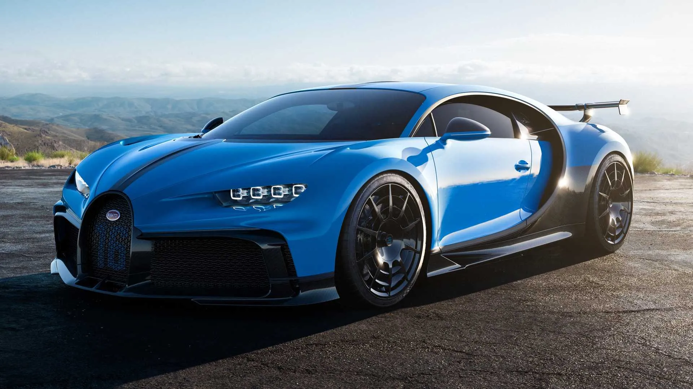

Bugatti, Volkswagen AG yan kuruluşu olan İtalyan asıllı lüks spor otomobili, performanslı araba, süperspor otomobil, spor otomobil markasıdır. 1909 yılında yüksek performanslı otomobiller üretmek için Ettore Bugatti tarafından Fransa'da Molsheim ilçesinde kuruldu. II. Dünya Savaşı'nın başlamasına kadar dünyanın en prestijli ve hızlı otomobillerinden bazılarını üretmiştir. Savaşın başlaması ile başlayan maddi sorunlar ve Ettore Bugatti'nin oğlunun ölümü sonrasında iflas etmiş ve uçak parçası fabrikası da satılmıştır. 1998 yılında Volkswagen grubu isim haklarını satın alarak Bugatti markasıyla yeniden üretime başlamıştır. Firmanın VW kontrolü altında ürettiği ilk modeli olan Bugatti Veyron, 407 km/s son hıza ulaşabilmektedir ve 1001 beygir gücüne (1250 nm tork) sahiptir. 4 Milyon Euro'luk fiyatıyla seri üretim halindeki en pahalı otomobillerden biridir. Tarihsel olarak bakıldığında da, bilinen şimdiye kadar en yüksek fiyatla satılmış otomobil, sadece 6 adet üretilmiş olan 1926 model "Bugatti Royale" dır. Japonya’da 15 milyon dolara satılmıştır.
